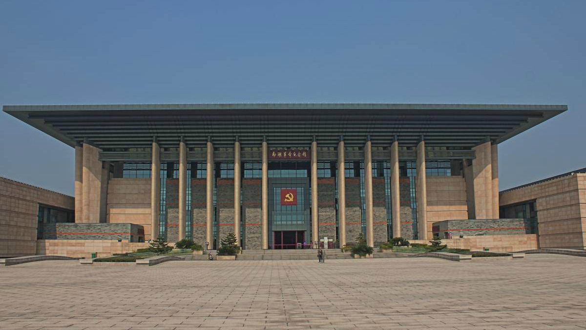

乌镇镇，原名乌墩 [35]，隶属于浙江省嘉兴市桐乡市，地处江浙沪“金三角”之地、杭嘉湖平原腹地。乌镇境内水系属太湖流域，河流纵横交织，京杭大运河依镇而过。乌镇原以市河为界，分为乌青二镇，河西为乌镇，属湖州府乌程县；河东为青镇，属嘉兴府桐乡县。解放后，市河以西的乌镇镇划归桐乡县，才统称乌镇镇。乌镇镇拥有7000多年文明史和1300年建镇史 [1]，是典型的中国江南水乡古镇，是中国历史文化名镇，有“鱼米之乡、丝绸之府”之称

嘉兴南湖，旧称陆渭池，又称马场湖、滮湖 [1]，位于浙江省嘉兴市南湖区，地处嘉兴市城东南部.南湖红船位于南湖湖面，是一条单夹弄丝网船，长约16米，宽3米。内有前舱、中舱、房舱和后舱，中国共产党第一次全国代表大会在中舱举行。
